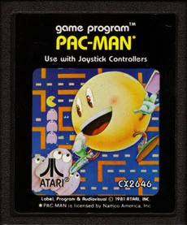
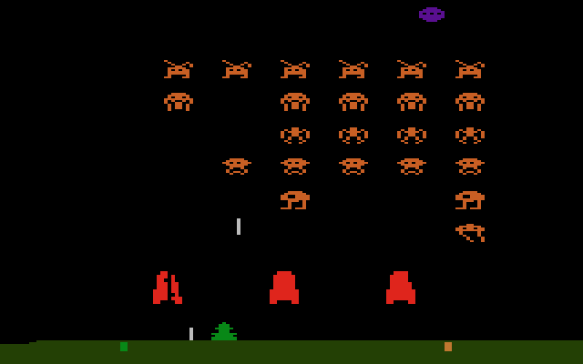
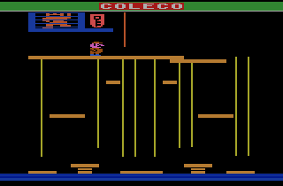

Atari 2600
Projetado por Jay Miner, foi lançado em 1983 no Brasil pela Polivox. Popularizou o formato de videogame doméstico e virou símbolo cultural dos anos 70- 80, com pico de vendas no Brasil entre 1984-1986. Destacou-se por gráficos coloridos, som nítido e cartuchos trocáveis, com hits como Pac-man, Space Invaders e Donkey Kong. Produzido por 15 anos, caiu com concorrentes mais potentes.
Veja um vídeo de avaliação do novo Atari!Pac Man
Lançado em 1982 pela Atari como porta do arcade da Namco (1980). O jogador controla o Pac-Man para comer wafers em um labirinto, fugindo de 4 fantasmas. Programado por Tod Frye em 6 meses. Atari produziu +1 milhão de cópias e promoveu com "Dia Nacional do Pac-Man" em 03/04/1982.

Space Invaders
Primeiro jogo do console com tema de "atirar em aliens" (1980), adaptação do arcade da Taito (1978). Controle um canhão laser para destruir invasores espaciais que descem, inclui gráficos exclusivos, modo 2 jogadores, inimigos invisíveis, escudos e tiros em zigue-zague. Desenvolvido por Rick Maurer. maior hit da Atari em 1980, impulsionou vendas do 2600 e foi o primeiro "killer app" dos videogames. Vendido em massa, Maurer ganhou só US$11k e saiu da empresa, abrindo portas para ports de Namco e Centuri.

Donkey Kong
Port da Coleco (1982, programado por Garry Kitchen) do arcade Nintendo (1981), criado por Shigeru Miyamoto e Gunpei Yokoi. Você é Jumpman (futuro Mario) subindo plataformas em NY para resgatar Pauline do gorila Donkey Kong, desviando de barris via escadas ou pulos. Pioneiro no gênero plataforma, com narrativa de "donzela em perigo", cutscenes e fases variadas. Sucesso massivo com 15M+ unidades totais, introduziu Mario e posicionou Nintendo no Ocidente. Imitações surgiram e Universal processou, sem sucesso, por semelhança com King Kong

Menu